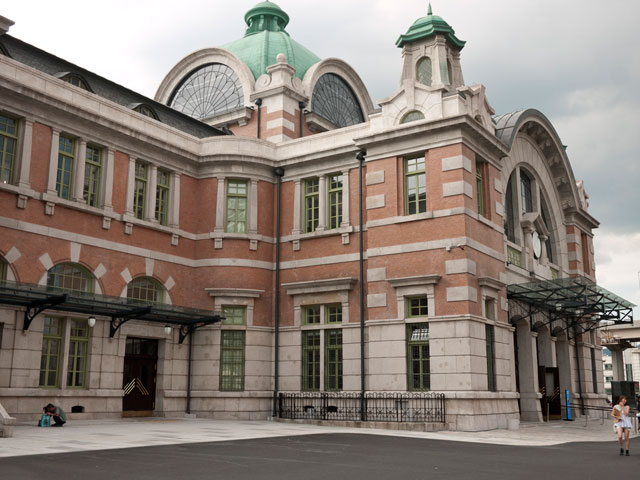

- (1)
- — Catherine Griffiths
- Doosup Kim
- Byungil Choi
- Daniel Eatock
- Joon Soo Ha
- Research and Development
- Sandra Kassenaar & Bart de Baets
- Dongwan Kook
- Kyuhyung Cho
- Hyounyoul Joe
- Dainippon Type
- Yuma Harada + Shohei Iida
- Roman Wilhelm
- Studio Spass
- R2
- Till Wiedeck
- Wang Ziyuan
- Brownfox
- Leslie David
- TYMOTE/CEKAI
- Wu Fan
- Elodie Boyer
- Rejane Dal Bello
- Yi Jisung
Catherine Griffiths
AEIOU—Constructed/Projected, 2005
AEIOU—Constructed/Projected is the fourth work in the Vowel series. Constructed/Projected is a new work made in response to C( )T( ), and the Biennale theme of city and typography. Layers of interaction involving collected numbers, letters, words, phrases—found and constructed—with the human body, are presented as a short film, with objects propped and stacked, nearby.
